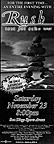
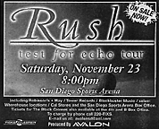
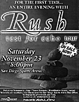
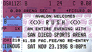

|
November 23, 1996 Sports Arena. San Diego, CA
    The San Diego Union-Tribune November 26, 1996
Rush lets its by-the-numbers approach occasionally exit, stage left
After 20 years, the Canadian rock trio Rush finally is starting to lighten up. Unlike other progressive rock groups from the '70s -- such as Yes, King Crimson and Emerson, Lake & Palmer -- Rush, which played a three-hour concert Saturday for a crowd of 8,532 at the Sports Arena, has been a consistent draw. Since the mid-'70s, the band's lineup of Geddy Lee on bass, vocals and keyboards, Neil Peart on drums and Alex Lifeson on guitar has packed arenas. And its albums, including the recent "Test for Echo," continue to be released at a steady rate and debut high on the charts. Rush's live performances, however, have been strictly by-the-numbers affairs as the group tries to duplicate the studio versions of its songs note for note, seldom engaging in any spontaneous playing. While much of Saturday's concert featured the same calculated moves that have earned the band members their reputation as rock's least sensitive guys, the show had a number of unusually carefree moments that suggested the group may be on the verge of a rebirth. Right from the start, Rush showed a willingness to experiment. Near the end of the second song, the 1985 hit "Big Money," Lee and Lifeson successfully segued into a short, surf-rock jam -- an unheard-of departure from Rush's usual mode of operation. The group also altered the arrangements of "Red Barchetta" and "Closer to the Heart" to let Lee and Lifeson display their skills. The jam at the end of the instrumental "Leave That Thing Alone" also had the feel of improvisation. Despite the breaks from tradition, Rush's 24-song set was still plagued by the tedious, synthesizer-heavy material from its past seven albums. Songs such as "Animate Me," the syrupy ballad "Nobody's Hero" and "Roll the Bones" (complete with a silly, prerecorded rap) came off as listless and generic. "Driven," "Half the World" and "Virtuality" -- tracks from "Test for Echo" -- fared no better. The stage props (a giant video screen and satellite dishes that spit out lasers) provided an all-too-obvious illustration of the band's interests in high-tech communication. Even though Rush has tried to write about such current issues as AIDS and violence on TV for "Test for Echo," the songs that resonated most with the audience were ones from the band's peak in the late '70s and early '80s -- "The Trees," "Closer to the Heart," "Tom Sawyer" and "Spirit of the Radio." Rush received the best reception for "2112," a 20-minute song from its 1976 concept album of the same name. The track's driving instrumental introduction was compelling, but when Lee started singing the Ayn Rand-inspired lyrics about a repressive futuristic society, the song's mixture of science fiction and individualist ideology became overbearing. Although Lee joked that the band (who are all in their 40s) had to take their Geritol during the 20-minute break, Rush showed little signs of aging. Peart was a little slower on the drums, but he remains one of rock's most talented players (his signature drum solo was dynamic, if pretentious). Near the end of the show, the poker-faced Peart even hammed for the cameras that were projecting his image onto the large video screen behind the stage, letting out an excited smile that suggested he still gets a charge out of performing. It looks as if Rush has put the fun back in its live show. Now the true test is to see whether it can put the rock back into its new music.
|
{kind=link}
{kind=link}
{kind=link}